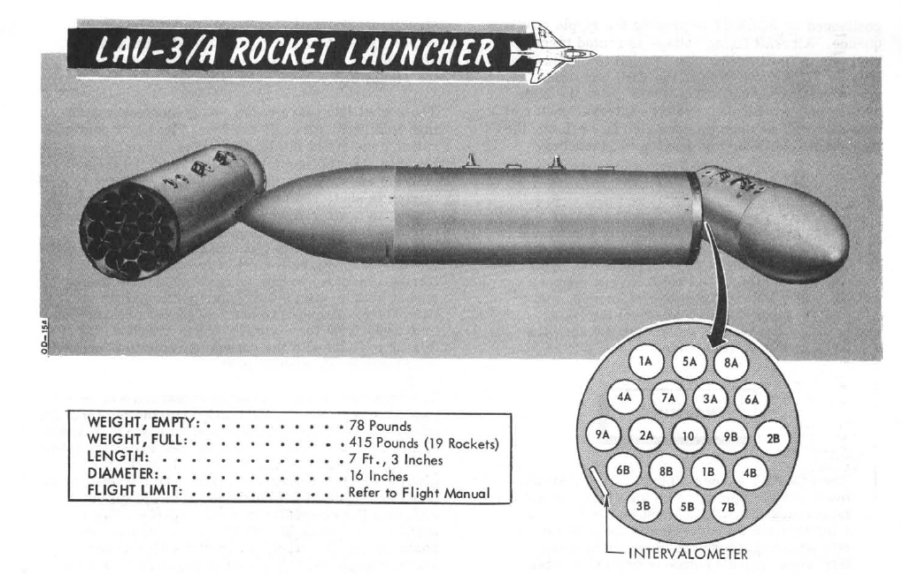

Weapons and Weapons Employment
M61A1 Vulcan Cannon - Internal and External
Internal M61A1 Vulcan 20mm Cannon

The General Electric M61 Vulcan cannon finally went to war as an integral part of the Phantom with the advent of the F-4E, with the nose profile and APQ-120 modified to fit the weapon. Carrying 639 rounds in the internal drum, the six-barreled Gatling style rotary cannon provides a user-selectable rate of fire from 4000 to 6000 rounds per minute, delivering a muzzle velocity in excess of 3,450 ft/s, with armor piercing incendiary and high explosive incendiary round options available. Useful in both air to air and air to ground roles, the Vulcan was used for four confirmed kills by the USAF over Vietnam with the F-4E.
To utilize the M61, the GUN station select switch must be selected, the Master Arm must be ON, and the Gun selection on the Pinky Switch (Aft) must be actuated. This will illuminate the GUN lamp on the Head Up Display.
For air to air usage, the optical sight should be selected to A/A mode. In air to air mode, the optical sight functions as a lead computing optical sighting (LCOS), thus maneuvering in both elevation and azimuth relative to a radar locked target, or a default 1000' range setting in the event of no lock. With a lock, the range bar presentation is relative to 6700' just to the left of the tick at the 1 o-clock position, down to 1000' at the 6 o-clock position.
For air to ground use, the optical sight should be selected to A/G mode, the Delivery Mode knob should be set in the OFF or Direct mode, and the desired sight depression mil setting be entered for the intended attack profile. Depression is set relative from the Fuselage Reference Line (FRL). While Depression will lower the reticle in elevation, there is no azimuth drift due to relative aircraft motion.
Gun rate is controlled with the Rate switch on the Pedestal panel, and is selectable as High (6000 rounds per minute) or Low (4000 rounds per minute). Also on the Pedestal panel is the gun rounds remaining indicator.
Of note is the Auto Clear function; the cannon will fire approximately between 5 and 11 rounds from the point the pilot has released the trigger to clear all bolt actions in the cannon; this spindown takes approximately one second, and the gun cannot be fired again during this operation. While the Pedestal panel carries the Auto Clear switch, this switch does not have any control over the internal M61A1 cannon, and can only deactivate round clearance for podded external cannon installations.
SUU-16/A and SUU-23/A External 20mm Vulcan Cannon Pods

Built to both provide gun capability to aircraft that did not mount them internally, and to increase available direct fire in the close air support mission, the SUU-16/A and SUU-23/A gun pods were both built around the M61A1 and a 1200 round ammunition load. Both pods are fixed-rate at 6000 rounds per minute, and up to three can be concurrently installed and driven by the fire control system; while up to five can be loaded for ferry purposes, and promotional images have shown such a configuration, only three can be activated.
The primary difference between the -16/A and -23/A pods are their method of power; the former using a ram air turbine arrangement to drive its motor, while the latter is internally powered. This difference had an effect on relative utility- while the -23/A could be fired at any airspeed, thus allowing it to be loaded onto slower aircraft, the -16/A's ram air turbine required a minimum speed of 300 knots to fire, and only reached its optimum performance above 400 knots. Both pods have an auto-clear function for safety, which cause rounds loaded in the breeches to be released back into the ammo bin, which does entail a momentary delay of one to two seconds prior to being able to fire the pod again.
Activation of the SUU pods are performed by selecting their respective Station Select switches, and placing the Delivery Mode knob in OFF or Direct. The Weapon Selector knob can be in any position other than TV or ARM, unless CAGE mode is activated. The desired Auto-Clear setting should be selected, and Master Arm set to ON to activate the pod. On the SUU-16, the Master Arm activation deploys the ram air turbine.
Installed, the guns are boresighted along the Fuselage Reference Line. Thus, with the optical sight in air to air mode, the rounds will fall in accordance with reticle center, just as the main cannon- only with the natural offset of their respective pylon position, thus allowing for effective natural gunnery, if only affected by a moderate increase in resulting CEP. In the same fashion, in air to ground mode, the SUU pods observe the same performance relative to the reticle depression schedule as the internal cannon, again, with their respective offsets from centerline and CEP increase.
To safe the gun pods after combat, prior to deactivating Master Arm, the Auto Clear switch should be placed into the Auto Clear position, the trigger squeezed momentarily, and the respective Station Select buttons pushed to off. On the SUU-16, this will close the ram air turbine.
Air to Air Weapons
AIM-7 Sparrow

Originally designated the AAM-N-6 Sparrow III, the AIM-7 Sparrow saw initial service entry with the United States Navy in 1958. Unlike the beam-riding AIM-7A (AAM-N-2 Sparrow I), which required the launching aircraft to maintain boresight on the target for the flyout of the weapon, the semi-active radar homing AIM-7C could effectively engage a maneuvering target well off boresight, so long as the designating aircraft's radar could maintain a lock during the missile's intercept. The AIM-7C quickly gave way to the 7D, which saw a number of kills over Vietnam, and the 7E, which scored the majority of the type's kills in Southeast Asia. Additionally, the F-4E saw compatibility with the AIM-7F and AIM-7M.
Utilization of the AIM-7 begins with tuning the onboard rounds, performed with the RDR MSL switch, selecting it into the CW ON position. This tuning process takes approximately one minute, and can be initiated once power has been applied for at least one minute to the radar (any position out of OFF) in most operating environments (ambient temperature below 90 degrees F). The missiles are properly tuned when the missile status light (RDR) is illuminate in each station carrying a Sparrow missile for at least one minute. After successful tuning, the RDR MSL switch can be returned to the STBY (Standby) position. The status lamps will turn off once returned to STBY. Once in the combat area, the RDR MSL switch should be returned to the CW ON position, to maintain proper missile kystron tuning state during the engagement.
To employ an AIM-7, the Optical Sight should be placed into the A/A position, which stabilizes the Reticle at the Radar Boresight Line in the window. The roll tabs function to provide the pilot with relative roll attitude guidance in instrument conditions (weather or nighttime), and the right side of the 50 mil diameter circle (outer) functions as a range bar when a radar lock is achieved against a target, displaying ranges up to 20,000' (top) to 3000' (bottom), with 12,000' signified at the 3 o-clock position.
When radar lock on against a target is achieved with AIM-7 selected, a pair of strobes surround the locked target in azimuth. Identified as Rmax and Rmax 2, they represent effective ranges against a 1 G target (Rmax), and a high rate maneuvering target based on altitude (Rmax 2, representing 8G up to 20k, 6G to 35k, and 4G above 35,000'). When a missile is launched, the Rmax 2 strobe falls to the bottom of the display, and begins driving upwards towards the target lock; this functions as a missile flyout timer. When the timer reaches the locked target, it can be assumed the missile has arrived. The display does not provide Rmin, but instead reverts to a break X warning superimposed over the radar image should Rmin be attained for a Sparrow launch.
Prior to engagement, a determination must be made as to whether or not the missile interlocks will be kept in, or positioned out. The interlocks preclude an AIM-7 shot when outside of effective firing parameters, those being the missile in range (illuminating the IN RANGE light), the target aim dot within the ASE (Allowable Steering Error) circle on the radar display, and the radar display mode out of VI (Vis-Ident mode).
With the interlocks in, should any of the three aforementioned restrictions be met- target out of range, aim dot outside the ASE, or the radar left in VI, a trigger actuation will not cause the release of a missile. With interlocks out, an AIM-7 will be released no matter the condition of the three interlocks.
When parameters are met, the the SHOOT lamps will illuminate. Found in both cockpits, these lights reinforce the condition of good launch conditions for the AIM-7. In the event a target enters a main beam clutter situation (aspect angle between 81 and 99 degrees and lower than 5 degrees above the horizon), the lights will turn off, even though the interlock requirements are met. Maneuver should be utilized to bring the target outside this region prior to launch.
At the point of engagement, AIM-7 missiles are selected using the Pinky Switch on the outboard (left) throttle arm, selecting the forward position. This illuminates the RADAR lamp on the Head Up Display panel.
Before employing the AIM-7E Sparrow, a delay of four seconds should be given if the Master Arm switch is set in the ON position prior to radar lock on, or a delay of two seconds if the Master Arm switch is set to ON after radar lock on. This is due to the set-in period of the missile speedgate. With the AIM-7F, this delay is reduced to two seconds with Master Arm On prior to lock, or immediately after selecting Master Arm to On if lock on was achieved first. Should these delays not be adhered to, the missile may fail to track because of improper target doppler injection.
With the target in parameters or interlocks out, pressing the trigger fires off an AIM-7. A second AIM-7 can be fired immediately at the same target, if desired, by releasing, then squeezing the trigger a second time- holding it on the second actuation.
The launch sequence for the AIM-7 missile is
Left Forward Right Forward Left Rear Right Rear
In the event of a centerline store or tank precluding forward missile release, the CL TK lamp will illuminate. Rear missiles may still be fired, and the forward missiles may be fired if the a centerline tank is dropped or MER is jettisoned. The lamp also illuminates in the event of a BRU-5/A in the centerline position, however, a missile can be launched in that condition. The Aero-27 precludes any release, even if the round has been dropped.
AIM-9 Sidewinder

Entering service with the United States Navy in 1956, and finally accepted by the United States Air Force in 1964, the short range, infrared seeking AIM-9 Sidewinder is considered by most to be the world's first truly effective air to air guided missile. Beginning with the AIM-9B and maintaining compatibility to the AIM-9M in US service, the Sidewinder provided the Phantom II with a capable close-in weapon system against rapidly maneuvering opponents.
Employment of the AIM-9 can be performed with or without a radar lock, and is initiated by selecting Master Arm to ON and selecting the Throttle Pinky Switch to the center position for Heat. The HEAT lamp on the Head Up Display will illuminate, and available AIM-9 missiles will illuminate on the Missile Status Panel. The Optical Sight should be selected to A/A, and the reticle will stabilize at the Radar Boresight Line, which is the boresight location for the Sidewinders on the rails.
Should a radar lock be achieved, the sight will display the range bar on the right side as previously described, with 20,000' indicated at the top, and 3,000' range indicated at the bottom. With a radar lock on, the radar will display a pair of strobes signifying Rmax and Rmin for the Sidewinder against the target under current launch conditions.
It is important to note that the AIM-9 does not receive a guidance handoff from the APQ-120 like on later aircraft to direct the seeker's look angle. Instead, the ASE circle presents the aim dot against the target to bring it to the RBL. Centering the aim dot in the ASE aligns the target to the RBL, thus allowing for rapid acquisition by the seeker of the selected AIM-9. Once the missile's tone changes to signify lock, the pilot can then select the AAR button on the grip to allow for Sidewinder self-track (seeker uncage); this function allows the seeker to maintain acquisition of the target (noted by the shifted audio tone), while permitting maneuver of the aircraft to a better aspect angle or range solution prior to launch if the situation allows. The amount of maneuver available to a given Sidewinder type is based on the variant, and should be considered before making the selection.
Once the desired firing solution is attained, the AIM-9 is launched using the trigger.
AIM-9 Launch Sequence:
- Left Outboard
- Right Outboard
- Left Inboard
- Right Inboard
Specialized ACM Functions: CAGE and CAA
CAGE Mode
In the event that an AIM-7, AIM-9, or M61A1 must be employed against an airborne target with the sight in A/G mode (for example, the flight is bounced by opposing aircraft), the optical sight reticle can immediately be slewed to the Radar Boresight Line using the Cage Button, found on the inboard (right) throttle handle. Cage mode commands the radar into BST mode with a five mile range, and short pulse, and sets the firing circuit for the currently selected air to air weapon relative to the Pinky Switch. For the optical sight, the command activates the respective elevation and azimuth tracking, roll mark, and range functions of the reticle for the chosen weapon, without the pilot having to remove a hand from throttle or stick to swap the sight mode or weapon control panel functions.
Should a track condition exist prior to pressing Cage and the Pinky switch is in Radar or Heat position, the lock is broken when the button is pressed, and the antenna slaves to boresight when released. If the Pinky Switch is in the Gun position, the lock is not broken.
Cage mode can be exited from either cockpit, by placing Weapon Select knob in the pilot cockpit to the B position momentarily, or by the WSO pressing the Air to Air button on the rear cockpit panel. If the pilot leaves the Weapon Select knob in B, it does not preclude a later entry into Cage mode.
Computer Automatic Acquisition Mode (CAA)

Once in Cage mode, the radar can be selected in to Computer Automatic Acquisition using the Nose Gear Steering button. In CAA, the radar enters a vertical-oriented scan pattern 78 degrees in height by 15 degrees high. Actual radar lock capability within this scan pattern is from +45 degrees above the horizon line to -9 degrees below the horizon line due to APQ software limitation. In the event that the radar finds a suitable target within the scan volume, the target will be locked. Should the flight crew find the locked target not be the one intended, the Nose Gear Steering button can be pressed on either stick grip to return the radar back to the search pattern.
In CAA mode, the radar's search pattern can be shifted left or right utilizing the Pinky Switch. While this actuation will change the illuminated weapon indicated on the Head Up Display, the actual selected weapon from the point of Cage mode entry does not change.
| Selection | Focus |
|---|---|
| Guns | Radar Focus Left |
| Heat | Radar Focus Center |
| Radar | Radar Focus Right |
To exit CAA, the pilot can select position B on the Weapon Select Knob, or the WSO can push the Air to Air button. Should a radar lock be in place at the time of mode exit, it will be retained.
Air-to-Ground Weapons
AGM-65 Maverick

Entering service in 1972, the AGM-65 air to surface missile provided the Phantom II with a direct-fire long range weapon, capable of destroying armor, mechanized infantry, and other targets with electro-optical, and later- infrared imaged, accuracy. The F-4E was capable of carrying up to six between the two inboard wing pylons.
Employment of the Maverick is shared between both cockpits, with the pilot responsible for stores and mode selection, and initial seeker placement. From the point the seeker head is stabilized on the intended target area, either crew member can direct the final intended contrast target.
Conventional Bombs - Mk 80 Series

The Phantom II's bread and butter in the air to ground role, the Mk 80 series conventional bombs were first dropped in combat over North Vietnam. The F-4E is able to deliver the 500 lb Mk 82, the 1000 lb Mk 83, and 2000 lb Mk 84. Of note is the selectable drag option Mk 82 variant known as Snakeye. With the selectable fin arrangement on the round, the deployable fins remain in position in the low drag profile, and deploy as a cruciform aerobraking device in the high drag setting. This change in setting is managed with the Nose/Tail Arming switch.
Laser Guided Bombs - GBU-10, 12, and 24

Built around the Mk 80 series of conventional bombs, the Paveway series precision bomb kits install a guidance section and directional maneuvering fin section to the Mk 82 (GBU-12) and Mk 84 (GBU-10 and 24) general purpose rounds, respectively. Utilizing the Pave Spike laser targeting pod or buddy lasing, the Paveway's resulting performance delivered a substantial increase to the Phantom's bombing accuracy, with the later GBU-24's larger fin arrangement providing greater glide range for the 2000 lb round over the original GBU-10.
Anti-Tank Cluster Bombs - Mk 20 Rockeye

Carrying 247 Mk 118 anti-tank bomblets, the Mk 20 Rockeye is used to deliver said potency across a wide dispersal area. The Mk 20 has a base schedule dispersal time depending on variant (4 seconds in the Mod 2 variant, and 1.2 seconds in the Mod 3), along with a ground crew selectable option time that is programmed prior to takeoff. In concert, once over the target area the pilot can select the necessary option through the Nose/Tail Arming switch, and deliver the weapon with the profile most suited to the target.
Mk 4 Series 2.75 Folding Fin Aerial Rockets - FFAR

Also known as the Mighty Mouse, the Mk 4 series of unguided aerial rockets originated as an air to air weapon. Given the rocket's undirected nature, tendency for wide dispersion in salvo usage, and overall poor performance in its intended role- most notably an incident in which over 200 rounds were fired by a pair of F-89 Scorpions in a failed attempt to down an uncommanded target drone, the Mighty Mouse was wholly unfit for purpose. However, the rocket's peculiar traits were ingeniously capitalized upon by transitioning it to the role of an air to ground area effect weapon.
Having become a useful tool, the original Mk 4's capability was expanded upon with a wide array of warheads, including smoke, anti-personnel flechette, and those used by the USAF on the Phantom- the m156 White Phosphorous, Mk 1 High Explosive, and the Mk 5 High Explosive Anti Tank. Depending on the hardpoint location and configuration, up to 3 LAU-3 pod launchers can be installed per hardpoint, each carrying 19 FFARs per.
AGM-45 Shrike Anti-Radiation Missile

The Sparrow-derived AGM-45 Shrike is an early attempt at an anti-radiation missile for the suppression of enemy air defense (SEAD) role. Mating a frequency-tuned seeker with the rocket body of an AIM-7, the Shrike provided the United States Navy, and later the United States Air Force, with a standoff option for the engagement of enemy SAM radars. While nominally effective, in practice the Shrike was a difficult weapon to employ properly, given its limited range, low speed, and primary engagement mode that left the launching aircraft within lethal envelopes of most opposing air defense systems. Further reducing its potency was a small warhead, meaning that in most instances only the emitting antenna itself was damaged, rather than the vehicle it was mounted to.
While limited in most respects, the Shrike received a number of upgrades over its lifetime, lasting in service from the mid-60s in Vietnam, until just after the Gulf War, through better engines and additional seeker updates for later SAM systems. The Shrike was put into use by two foreign users- the Israeli Air Force, who also modified it for a ground-launched version, and through clandestine means with the RAF during the Falklands War.
The AGM-45 Shrike has three distinct launch modes, all of which are described in the AGM-45 Mode section.
BDU Series Training Bombs

Depending on the training requirements and range needs, the Phantom II can carry the BDU-33 25 lb training bomb, the BDU-45 500 lb training bomb, or the BDU-50 500 lb training bomb, in either low or high drag configuration, to simulate the carriage and release profile of standard Mk 82 and Snakeye rounds.
Air-to-Ground Weapons Modes
LOFT
Loft bombing is utilized to deliver multiple bombs with minimum exposure to ground fire and no target flyover. As the name entails, the aircraft transitions from a low altitude to a higher one in a pullup, thus lofting the released munitions at a pre-calculated point that reaches the target.
Planning for a loft attack requires a known target location, so that distances for the IP and respective bomb ranges can be calculated. The ballistics tables are references to determine delivery pattern and pullup-to-target range. With this information, the number of bombs can be decided, which determines the spread, and knowing the pullup to target range- the pullup point distance to the IP can be chosen. As the path from IP to pullup is flown at a constant speed, this can then be used to determined time from said distance for Pullup Timer entry. And with the ballistic table reference for the LOW angle, the profile is set.
Upon entry to the target area, the pilot flies the intended course to the IP, and once over, presses and holds the bomb release button to initiate the run. Flying direct or crabbed to the pullup point, the pilot maintains the bomb release button in the down position, and holds it until the desired munitions have released.
In LOFT mode, the ARBCS programs for a 4.0 G pullup schedule, and will automatically release the selected munitions once the bombing run is initiated, timer runout has occurred, and pre-set LOW pitch (gyro) angle is achieved. At the initiation of the bomb run, upon pressing the bomb button, the ARBCS overrides any other navigational guidance provided on the ADI and assumes command of the pointers to show deviation relative to the programmed attack profile. The vertical pointer offsets in the direction requiring yaw input to maintain target alignment. On approach to the loft point, the horizontal needle shows deviation from a 1.0 G flight path. When the pullup timer completes signaling the 4.0 G pullup, deviation of the horizontal needle is relative to the desired constant 4.0 G pull, with the initial drift representing achieving 4.0 G of load in two seconds. Maintaining the horizontal needle centered means the pilot has increased and held G at the proper rate for maximum accuracy. Control of the ADI by the AN/AJB-7 is maintained until the pilot releases the bomb button after the last desired munition is released.

Timed Over the Shoulder - (TIMED) O/S
Derived from the Loft mode, Timed Over the Shoulder bombing is available for circumstances in which a direct target flyover is possible, originating from a known IP position, with the attack flown at a known altitude and airspeed determined during mission planning. Setup of the LABS system requires time (calculated using the known distance from the set IP to the target flyover point and the intended airspeed) and calculated release angle for the resulting airspeed and munition, which is entered into the High Angle setting; this value must be in excess of 90 degrees, and the Low Angle and secondary timer settings can be left at any value. Flying the appropriate heading at the correct speed guarantees target flyover, and upon timer runout an audible tone will be heard to initiate pullup, along with the Pull Up Lamp illuminating. This timing action is initiated by pressing the bomb button over the IP, and holding it throughout the attack run.
Like Loft mode, the pullup signal indications will also trigger the horizontal and vertical pointers on the ADI to display appropriate pitch and angle indications to maintain proper aircraft orientation for accurate release point entry, and the target pull rate is 4.0G The guidance drives the attacking aircraft through an Immelmann, and the bombs will release at the entered High Angle value. Maximum accuracy is achieved through maintaining a centered horizontal needle during the entire bombing run, and like Loft, the ADI reverts back to the previous function once the bomb button is released after the last intended munition for the run has been dropped.
Intantaenous Over the Shoulder - INST O/S
Further derived from the Timed O/S mode, Instantaneous Over the Shoulder bombing provides the same combined attack/escape profile as the former against targets of opportunity. It does this by dispening with the need for an IP location and the resulting time, and simply requires entry of a High Angle value in excess of 90 degrees pitch. Once the aircraft is directly over the target, the pilot presses and holds the bomb release button and initiates the 4.0 G wings level pull up into the Immelmann maneuver. The LABS computer performs the same ADI display overrides as Loft and Timed O/S, placing the horizontal director needle at the pitch appropriate for a 4.0 G pull, and the vertical director displays deviation to maintain proper angle of bank through the maneuver. Upon reaching the necessary angle of pitch, the munitions separation begins, and the bomb release button can be released once all desired rounds have been ejected from the aircraft, thus resetting the display of the ADI.
Timed Low Angle Drogue Delivery - T LAD(D)
Conceived as a delivery method for tactical nuclear bombs, Timed Low Angle Drogue Delivery is performed just like it sounds. The mode performs a low altitude ingress, transitioning through a 3.5 G pullup into a 45 degree climb profile that allows for a lofted release of a weapon at the top of the climb, allowing an escape attempt as the munition's deployed drogue slows the decent to the target. While originally designed with nuclear intent, the method provides yet another option for accurate bomb delivery with a high, or high to low, escape option for appropriate targets.
Planning of the T LADD engagement begins in the bombing tables, determining the correct entry altitude and airspeed for the selected weapon, as well as the resulting altitude gain and time from pull up initiation to release- which will be used as the Release control timer value, as well as the distance downrange this climb maneuver will take the aircraft. Using this range as a baseline, an appropriate approach angle is determined, and a suitable IP waypoint is chosen. The distance between the IP and the pullup point is evaluated against the planned profile speed, which provides another time entry- this will be the Pullup timer value.
The attack is performed by flying over the IP along the desired intercept heading to the target at the correct speed and altitude, and actuating the bomb release button upon flyover of said IP, holding it down throughout the maneuver. This begins the Pullup timer. The ADI needles will center, then show deviation against the initial heading course- vertial being roll, horizontal being level to maintain current altitude. At timeout of the Pullup timer, a pullup warning tone will be provided, and the Pullup Lamp will illuminate; subsequently, the Release timer will begin its count, the horizontal ADI needle will transition into show deviation from the intended 3.5 G pitch angle, and then stabilize once 45 degrees nose up pitch is attained. Proper timing and loading of the 3.5 G pullup will maintain the needle centered.
At timeout of the Release timer, the programmed munitions will release, the Pullup light will turn off, and the ADI needles will be stowed. Once the last round is ejected, the bomb release button can be released, and the desired escape maneuver performed.

Timed Level - TL
Timed Level bombing is the most basic ARBCS mode, utilizing only the Release timer; the Pullup timer should be set to 000, and the High and Low Release settings can be left at any value. The setting for the Release timer is found based on the bomb range value determined for the chosen weapon, referencing the desired flight altitude above the target and airspeed. This range determines the point where the munition(s) will be released from the aircraft. An IP is chosen relative to the bomb range distance, and the Release timer value is then calculated using the distance between the point of release and the IP based on the chosen airspeed.
The attack is performed by entering the necessary Release timer value, pushing and holding the bomb release button upon IP flyover, and maintaining straight and level flight at the planned airspeed and altitude at the target until the weapons are released from the aircraft. Unlike the other LABS modes, there is no pullup audio or ADI needle takeover to illustrate pitch or roll deviation- it is simply dependent on the pilot to maintain wings level flight.
Direct
Direct bombing is exactly as it sounds: classic, direct visual bombing, with both dive and level bombing release passes possible. Both the ARBCS and WRCS are excluded from this release mode, and the pilot flies the profile as found for the intended munition in the bombing tables, setting the sight depression to match, and hand flying the aircraft to place the pipper directly onto the target in accordance with the desired type of attack. Once pipper on is achieved, the bomb release button is pressed, and the selected number of munitions with the given program settings will be released. While the most basic mode available to the Phantom, Direct remains a reliable method when conditions permit, and can be used against any target the crew can see- namely, targets of opportunity, or in the CAS environment.


Offset
Offset bombing provides a blind bombing capability, with high and low level bombing profiles, using the full integration of the WRCS, INS, and radar in combination. Offset bombing can be used in both visual and instrument conditions, to release either bombs or dispensed munitions (with the RKTS & DISP mode).
The setup for an Offset bomb attack is based around the selection of an IP relative to a known target location. For a visual attack, it is called VIP- the Visual Identification Point, and initiation of the navigation assistance is performed with a direct flyover of the VIP. In an instrument conditions attack, the IP is called the RIP- the Radar Identification Point, and acquisition of this point using a radar lock in MAP-PPI mode generates a navigation solution to the target. When chosen during planning, he VIP or RIP's position relative to the target determines a pair of offset values (hence the name of the mode); one in the North/South axis, the other East/West. Both offsets are noted in feet, and the maximum amount of offset in each axis is 99,900', or 16.44 nautical miles. Also founding during mission planning is the altitude of the IP, and selection is made using the lookup tables for the respective weapon, altitude above target, and speed, taking note of the bomb range. When preparing the WRCS entries, the offsets are always referenced from the IP to the target. Selection of an IP should be as close as possible to the target to minimize system drift by way of smaller navigation time and distance, and approach to the IP should be flown with a focus on minimizing maneuvering required to put the target nose on after IP acquisition (RIP) or flyover (VIP).

Offset RIP Low Altitude Considerations
Of special note in the RIP mode is the need to compensate for altitude difference in the event the ingress to target will be flown below the altitude of the RIP itself. Because the computations performed by the WRCS and navigation system are mechanical, selecting a RIP target altitude above the course can cause interference damage. To alleviate this, perform the following:
a. Note the approach altitude above MSL. b. Subtract the approach altitude MSL from the RIP altitude above MSL. c. Subtract the resulting value found in b from the approach altitude.
The resulting value is used for the target altitude value, and the pilot flies the planned approach attitude during the target freeze and insert operations as per normal.
The differences in final attack procedures are described below:
Offset Visual IP
Prior to IP overflight, the N/S and E/W offsets, release range (x10 per the window, or using the x100 switch modifier on the WRCS initiate panel), and any desired release advance setting should be entered. Additionally, the desired release timing and count should be selected on the AWRU.
The Offset Visual IP attack commences on overflight of the VIP, with the aircraft at the desired release altitude and speed; as the aircraft overflies the VIP, the WSO simultaneously presses the Freeze Signal and Target Insert Signal buttons on the Cursor Control Panel; doing so initiates INS target tracking. At this time, the vertical ADI, Sight, BDHI, and HSI navigation aids will all show offset from the calculated release point, as well as target range on the HSI and BDHI.
Completion of the attack is performed by the pilot through maneuvering the aircraft to align course to the release point, maintaining the planned release airspeed and altitude, and, prior to reaching the release point, pressing and holding the bomb release button. If the bomb release button is released prior to munitions release, but at a range greater than the programmed release range, the attack can be recovered by pressing and holding the bomb release button until release occurs. When this takes place, the pullup light will illuminate to confirm drop initiation. Should the bomb release button not be pressed until after the release point is passed, the bombs will not release until the target is passed; ergo, the bomb button should be released to cancel the run prior to errant bomb drop.
Once an attack is completed, the navigation program against the set target is maintained. The aircraft can attempt a re-attack, although natural INS drift may reduce the accuracy of this second attack.

Offset Radar IP
Prior to RIP Freese and Target Insert, the N/S and E/W offsets, RIP altitude, release range (x10 per the window, or using the x100 switch modifier on the WRCS initiate panel), and any desired release advance setting should be entered. Additionally, the desired release timing and count should be selected on the AWRU. Prior to initiation, the pilot should enter the target area at the desired profile altitude and airspeed. The WSO should have the APQ-120 prepared for the attack with a good radar picture in MAP-PPI mode, NOR stab mode, WIDE scan, and a range of 10 or 25 miles, with an observed return from the RIP.
Initiation of the attack begins with placing the Along Track cursor (presented as a growing hemisphere on the radar display defining range to the RIP) in proximity to, but below, the intended RIP return. When this is set, the Cross Track cursor (a vertical line) is slewed over the RIP. Once the intersection is defined, the WSO waits momentarily until the RIP range decreases and falls onto the intersection. At this time, the WSO pushes the Freeze button. This initiates radar tracking of the RIP, and provides the opportunity for the WSO to better the intersection point between the Along Track and Cross Track cursors. Once the precise point is attained, the WSO pushes the Insert Target button, which hands target guidance off to the INS and performs an immediate slew of the Along Track and Cross Track cursors from the RIP to the offset target.
At this time, the INS presents guidance and range information on the ADI, the sight, the BDHI, and the HSI. The WSO should continue to monitor the radar display- should the actual target appear on the display as range decreases, the actual known altitude of the target can be entered on the WRCS panel and the Along Track and Cross Track cursors can be touched up using their controls to further increase release precision.
Prior to release range, the pilot must press and hold the bomb release button. Once the bombs have released, the pullup light will illuminate to confirm release.
In the event that a RIP profile, due to breaking weather conditions, transition to a VIP-possible profile, the offsets can be kept in the WRCS, and the pilot simply fly over the RIP, with the WSO pressing the Freeze and Target Insert buttons simultaneously, just like a VIP attack.

Target Find - TGT FIND
Target Find is a utility mode derived from Offset; it does not provide a standard release signal to the fire control and AWRU to initiate bomb drop. It is instead used to confirm target location without release, for training purposes, or, if necessary, perform an INS system update.
Note: with Pave Spike installed, Target Find can initiate a weapon release, and so Master Arm should be kept in the OFF position until positive target confirmation is achieved.
Target Find INS Update
INS update is performed using offsets again a convenient VIP or RIP, with the target location being where the INS update occurs. The INS update switch should be placed in SET, and the latitude and longitude coordinates of the target entered into the navigation control panel. The RIP or VIP acquisition procedures are used to generate the fix to the IP, with the Freeze and Target Insert buttons used to define the target location for update. The pilot flies the resulting guidance, while the WSO holds the INS update switch in the FIX position. Once the BDHI DME reads zero and the bearing needle passes through 90 degrees, the update switch is released, and the INS update is complete.
Dive Toss - DT
Dive Toss uses WRCS radar tracking, in conjunction with other aircraft sensors, to calculate the release solution in real time. The target can be approached from any direction, airspeed, and dive angle, and the WRCS computes the proper release point relative to the the acquired track, munition drag coefficient setting, and any release advance control input (in conjunction with AWRU settings).
To perform a Dive Toss attack, the radar must be set in AIR-GRD mode, with a 5 or 10 mile range setting. Once set, the pilot initiates the attack with the Optical Sight in Air-to-Ground mode, and the reticle automatically cages in elevation along the RBL. The pilot then selects DT on the Delivery Mode Knob, places Weapon Selector Knob in BOMBS, and selects the desired Interval and Quantity on the respective AWRU knobs. At this point, the pilot can initiate the attack.
The attack is initiated in a dive. The required dive is roughly 20% higher than that required for a Direct mode attack, as to achieve effective radar ground lock; that is, the radar must get a solid ground return, rather than see the actual target being bombed. Once lockon is achieved, the pilot then maneuvers to place the pipper over the intended target, wings level, then presses and holds the bomb button to insert radar range to the WRCS, and then begins the desired pullout maneuver, maintaining wings level. After the pilot pushes the bomb release button, radar ground lock is no longer required. The pullout maneuver must maintain as constant a rate of turn as possible for maximum precision.
At the point where the bomb computed trajectory will intersect the target, the WRCS provides the release signal, dropping rounds based on the settings chosen for number and interval.


Dive Laydown - DL
Similar to Dive Toss, Dive Laydown is available for saturation delivery of high drag weapons where range has little effect on the intended release parameters. Rather than a computed release range, the bombing table release range is set directly in the WRCS panel, and the pilot flies the ballistic schedule speed (true airspeed or ground speed) at the given altitude above the target to produce the given release range.
Dive Laydown is selected by placing the Delivery Mode Knob in DL, and choosing either RKTS & DISP (for dispensers/CBU only) or BOMBS. Desired release range is entered on the WRCS panel, and, if necessary, the release advance control.
The start of the attack is the same as Dive Toss; a higher than normal dive angle is flown, with the radar in AIR-GRD mode at 5 or 10 mile range, a solid return is generated, and the pilot then positions the pipper on the intended target and holds the bomb release button. Once this is completed, the pilot pulls out of the dive at the bombing table plan altitude, maintains the target speed and heading with wings level, and the bombs release automatically at the desired range. The key factors for accuracy in this mode are correct altitude and pitch angle at the point of release.

Laydown - L
The Laydown attack mode uses a known optical sight depression value (or IP) to determine range to target, and releases the munitions based on a desired range to target from the bombing tables. The profile is most useful for lower altitude attacks using high drag munitions.
Setup for the Laydown attack requires the bombing table target range and altitude above target to be entered on the WRCS panel. The Optical Sight should be set to the depression noted from the tables in Air-to-Ground mode, and the approach to the target should be flown at the true airspeed (or ground speed) listed in the bombing tables for the parameters, wings level. The AWRU and WRCS Release Advance settings should be entered as desired, and the Weapon Select Knob placed in BOMBS or RKTS & DISP (for dispensers only).
As the pipper crosses the target, the bomb button should be held until the set spread of munitions has released.

AGM-45
The AGM-45 has three separate launch modes available: AGM-45 (WRCS), LOFT, and DIRECT.
AGM-45
Used only with the AGM-45 in conjunction with the WRCS, this mode is the primary means of employment of the Shrike. The mode is based around a high altitude attack profile, and depends on the pre-programmed weapon engagement envelope of the AGM-45 stored within the WRCS. This profile, in conjunction with current aircraft state information from the INS and a signal provided by the receiver in the missile- having detecting an emitter of the type its attuned to, define a flight path and release envelope for optimum probability of the missile reaching the target.
With the WRCS mode selected to AGM-45, the run is initiated by arming a station select button for a hardpoint carrying an AGM-45 missile. Doing so activates the missile's receiver, and upon emitter acquisition will provide the aforementioned information signal to the WRCS. The WSO should enter a target altitude value into the computer control panel, if necessary, using a mean value for the current target area, and if multiple missiles are to be launched, a release advance time setting. The WRCS receives both data from the missile regarding look angle from the missile, along with corrected look angle from the INS; the selection for which data to use is performed with the DF REJ switch, and should in most all cases be left said position.
Look angle and estimated range available, the WRCS will provide guidance instruction using the needles on the ADI. Once oriented in the dive angle, the horizontal range to target will be provided on the HSI and BDHI, so long as the INS position is selected for navigation mode.
When the aircraft's orientation is correct and the ADI needles are centered, once the aircraft is within missile range, one of the indexer lights will illuminate based on the detected range to target to instruct the pilot as to the required release maneuver- dive, level, or pullup. At this time, the pilot can press and hold the bomb release button to initiate the attack. Once the release range is attained in the instructed profile, the missile will be launched.
Special note must be made of the importance of maintaining the ADI needles centered, especially the vertical azimuth relationship. Because the orientation of the missile itself when installed on the wing can cause offset of its receiver to occur when the aircraft is banked, preparation of the attack may require repeated adjustments with wings brought to level every few seconds to make certain the aircraft is pointing at the emitter.
Pullup
The pullup instruction is guidance for the pilot to initiate a steady rotation back to the horizon, and, if desired, continue into a steady climb state until range requirements are met and the missile is launched. The pilot can choose to either bring the aircraft to near level and stop, or pull further into a low climb profile. When the aircraft is approximately 5 seconds away from release, the level indicator will illuminate, directing the pilot to maintain the current orientation until the Shrike is away.
Level
The level instruction is less of a directive than a confirmation of impending launch. Depending on the initial attack setup, the level signal may immediately occur, or occur quite soon after one of the other two instructions. From that point, it is simply required that the pilot maintain the current state for best chance of missile success.
Dive
The dive command in the WRCS mode occurs only when the attack is initiated very close to the target. The situation and proximity to the SAM installation must be considered prior to attack commitment with the pickle button, as any response by the battery has a high probability of arriving before the missile can potentially kill the emitter. The dive command, once followed, will then be followed with the level indicator once missile launch imminent.
Loft
The Loft attack profile of the Shrike is like a loft bombing attack, utilizing the weapon lookup tables to define a suitable IP to release distance, the necessary release angle, and the time from IP to pullup is determined by the lookup table speed versus the IP to release distance.
One key difference in the Loft mode versus the WRCS employment modes for the Shrike is the primary usage of the NORM mode rather than DF REJ; this places the missile's receiver in the role of the azimuth guidance directive on the ADI rather than the INS. The ADI's vertical needle will appear when the AGM-45 position is selected on the pedestal switch.
The attack is performed like a loft bombing profile; the Phantom is flown over the IP at the intended altitude and airspeed, with the bomb release button being held from the point of flyover. The countdown timer initiates, the horizontal ADI bar appears to maintain level flight, and the pullup lamp illuminates. When the pullup timer runs out, the pullup lamp will turn off, the sight reticle will turn off, and the horizontal ADI bar will move to display G load as normal for the pullup maneuver; a correct profile will keep both ADI bars centered. When the aircraft achieves the programmed release angle, the missile will launch. Once launch has occurred, the pullup lamp and sight reticle will illuminate again, and the horizontal ADI bar will stow.
Direct Mode
Direct mode employment of the AGM-45 is dependent on the crew knowing the precise location of the target SAM emitter; while it can be utilized as a fallback method in event of a WRCS system failure, the need for at least 10 degrees of dive angle against the targe for successful delivery places a premium on being able to plan the attack against a specific point on the ground.
To employ the weapon in Direct mode, the crew confirms receipt of emitter audio, and initiates a dive to center the ADI needles at the target. The crew should then check the dive chart for angle and AGL, and the pilot shoul maneuver into that orientation, maintaining a centered vertical ADI needle. From that point, the bomb release button is pressed and held until the Shrike is fired.
AGM-65 Delivery
To utilize a Maverick of any variant, the pilot begins by pressing the applicable Station Select buttons, and setting Master Arm to On. The pilot then must select Direct on the Delivery Mode Knob, and the TV position on the Weapon Select Knob.
When selected to TV, the 3 minute missile gyro warmup sequence initiates; it is suggested to start the stopwatch to the left of the Multiple Weapon Panel as a means to avoid disturbing this sequence. Once the warmup has completed, the lower amber ARM indicators on the Station Select buttons will illuminate. Failure to permit this gyro cycle can potentially damage the guidance unit of the missiles aboard. During this warmup period, it is necessary to set the optical sight to A/G mode, and enter a depression of 45 mils, so that the sight alignment be that of the missile seeker.
Once the warmup has completed, the crew may activate their displays for viewing seeker video; the pilot selects the TV position on the Scope Display Select switch on the Pedestal panel, and the WSO places the radar display mode knob to TV.
With the displays activated, the pilot maneuvers the aircraft to position the sight reticle over the target area, and either crew member can then press their respective flight stick trigger to initiate video. With video active, command of the missile seeker is controlled by the crew member who activated the video signal, as follows:
Pilot
With the pipper over the target area, pressing and holding the AAR button enables track slewing with the Forward Hand Control stick inboard from the throttle. Once the seeker crosshair is over the intended target, releasing the AAR button performs a lock-on of the missile to the contrast area under the crosshair. If the missile seeker fails to achieve lock on the correct target, the lock can be broken by squeezing the trigger again, bringing the missile seeker back to its boresight position, and then reattempting the lock with the AAR button. Should the target not appear to have enough contrast versus the background around it, the contrast can be swapped from black hot to white hot, or vice versa, using the Target Contrast Switch on the Pedestal panel. Leaving the switch in the Auto position allows the seeker to attempt to determine the best option for contrast.
Should a missile appear to not be functioning correctly, it can be rejected to the next round in the release sequence using the TGT/MSL REJ switch.
Once lock on the correct target is attained, the missile is launched using the bomb button. To initiate lock on of the next target, the process is started over with the squeezing of the trigger.
With the above in mind for the electro-optical AGM-65A and B, the AGM-65D has a few minor alterations to the procedure. The seeker of the 65D has two FOV settings, wide and narrow, and initial video signal is provided in the wide setting. In this setting, a quartet of L shaped brackets define the region of the display that will be zoomed in upon selecting the narrow field of view. Pressing the trigger a second time changes the video to the narrow setting, allowing for a more precise selection of the target.
WSO
The WSO performs the same sequence of actions for the seeker guidance, and can initiate video upon pilot confirmation of pipper location using the trigger of his own flight stick in the rear cockpit. From this point, the WSO uses the the radar's cursor control stick to manage the seeker head placement, lock, and in the case of AGM-65D employment FoV controls. Rather than pressing and holding the AAR button to activate slew, the WSO selects the half-action trigger position, and then slews the seeker using the cursor control.
Once the applicable target is under the crosshair, lock is achieved using the full action command. Should the WSO need to change 65D FoV to narrow, a subsequent press of half action will do so. The WSO can change the contrast mode with the Contrast Switch on the left side console next to the radar display panel. And, once lock is achieved, the WSO can fire the missile using the Missile Launch button found on his flight stick- in the same position as the Bomb Release button on the front stick.